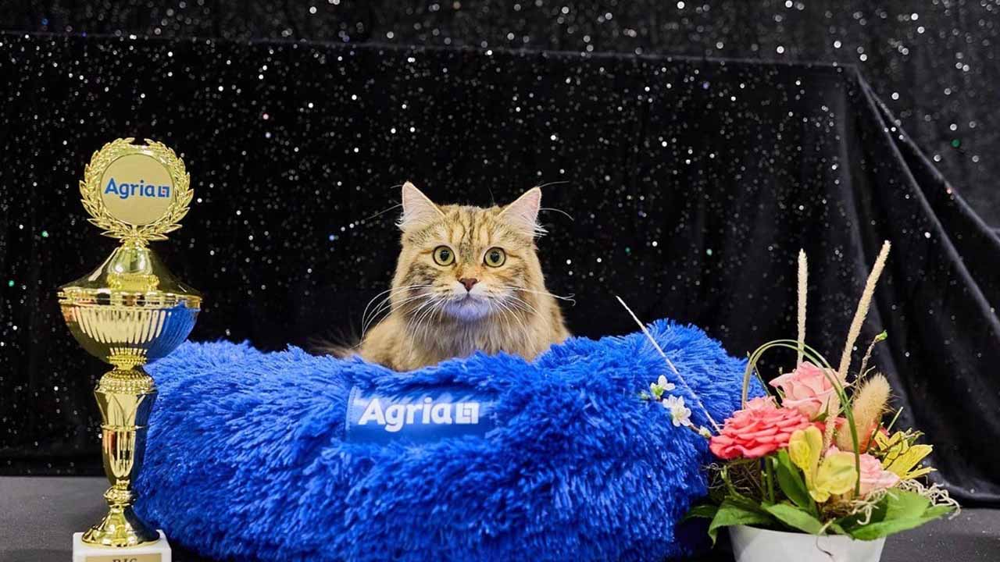
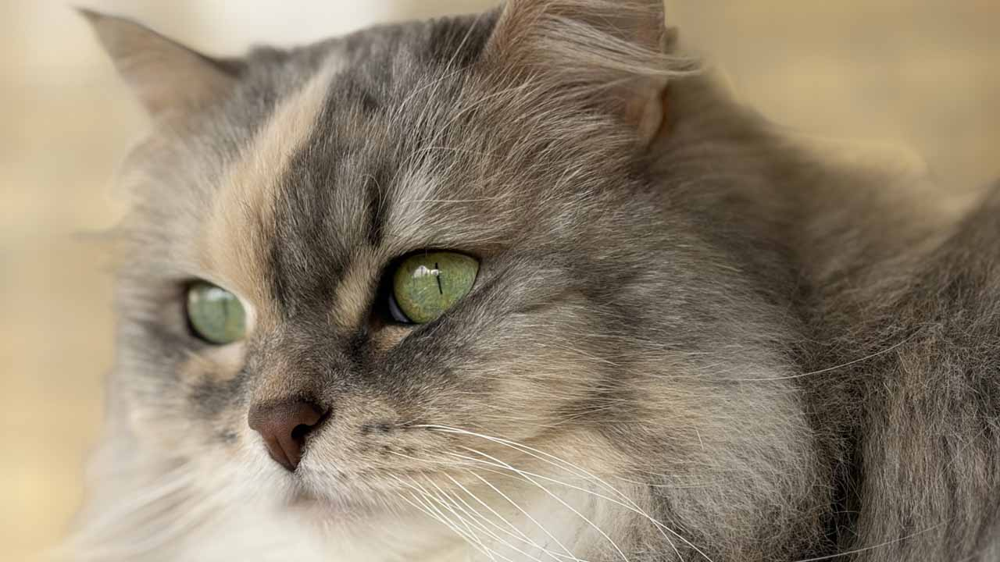
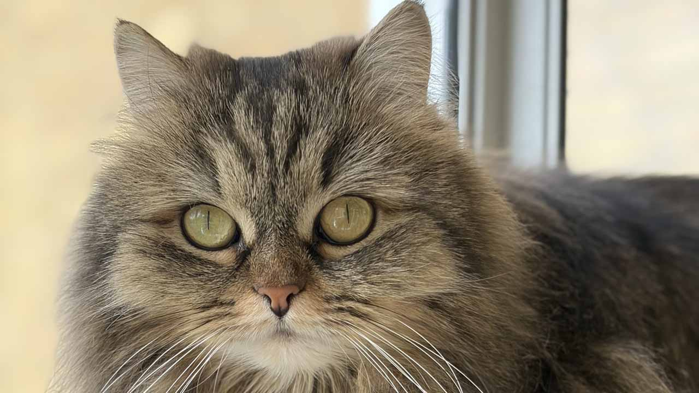

Våra katter
I vårt katteri finns tre katter. Det är Dreamie, Flinga och Karolina. Alla våra katter kommer från S*Sibelinaz uppfödning.
S*Sibelinaz Strawberry Dream

Dreamie är hemmets yngsta katt, drygt ett år gammal. Hon är avelshona och vi är fodervärdar åt S*Sibelinaz. Dreamie har ett fantastiskt temperament, och på utställningar visar hon verkligen upp sig för både domare och publik.
S*Sibelinaz Flinga

Flinga är hemmets äldsta katt med sina åtta år. Hennes gröna ögon är bedårande, liksom hennes speciella färg, blåsköldpadda silverspotted vit. Hon är också hemmets drama-queen, och är husses katt upp i dagen. Varje kväll ska hon sova nära husse. Då sover också husse som bäst.
S*Sibelinaz Karolina

Karolina är mellankatten i hushållet. Född 2020 gör henne till en "pandemikatt". Har trots det ställts ut med goda resultat. Fantastiskt temperament, men är ganska tydlig på morgnarna att det är dags för mat. Karolina är farmor till Dreamie och har haft två kullar.